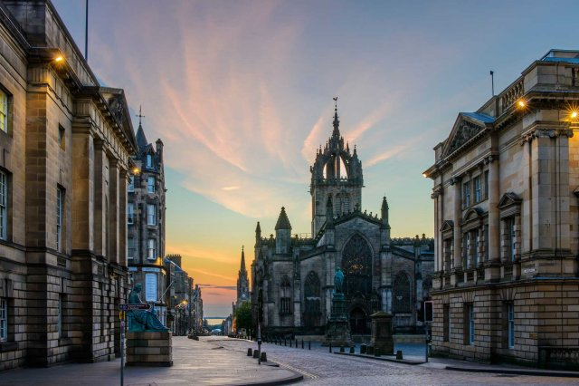

Королівська миля
Ця знаменита вулиця – це відразу чотири вулиці, які тягнуться на 1800 метрів, тобто на одну милю. Починається вона біля Единбурзького замку і веде до Холірудського мосту. Також до милі відносяться і невеликі вулиці, які розходяться від головної в різні боки. Королівська Миля стала з'являтися в 12 столітті. Одного разу біля підніжжя замку з'явився відкритий ринок, потім почали зводити дерев'яні будинки і дворики для розведення худоби. Через 4 століття англійці спалили їх і побудували нові будинки з каменю. Миля представляла собою зібрання торговців і ремісників. Тут цілодобово працювали шинки і будинки розпусти. Тут засідала інквізиція і вершилися фінансові справи. Загалом, кожен житель знаходив своє місце.
"Наступна сторінка"